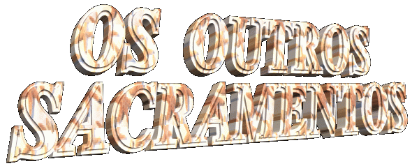
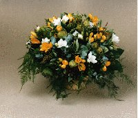

que crucificaram JESUS, ELE apareceu-lhes e
disse:
que crucificaram JESUS, ELE apareceu-lhes e
disse: 
Sacramento da Crisma ou Confirmação -
É aquele que nos dá o ESPÍRITO SANTO por excelência, imprimindo na alma do cristão um Caráter Sacramental que lhe confere plena prontidão, fortalecendo as convicções, firmando-o na Fé, aperfeiçoando as outras virtudes recebidas no Batismo e tornando-o consciente dos deveres e obrigações, além de confirmá-lo como testemunha de CRISTO. O Catecismo Oficial da Igreja afirma que: "A imposição das mãos é com razão reconhecida pela Tradição Católica como origem do Sacramento da Confirmação que perpetua, de certo modo, na Igreja, a graça de Pentecostes".
Sacramento da Eucaristia ou Sagrada Comunhão -
É aquele que o ESPÍRITO nos dá o SENHOR, sob as espécies de Pão e Vinho. Durante a celebração da Santa Missa, no momento da Consagração, acontece o fenômeno sobrenatural da "Transubstanciação" , ou seja, o ESPÍRITO SANTO transforma o pão e o vinho, em Corpo, Sangue, Alma e Divindade do SENHOR, mantendo aparentemente o mesmo aspecto das espécies de pão e vinho. O Catecismo Oficial acrescenta que a Eucaristia, "é a fonte e o ápice de toda a vida cristã. Os demais sacramentos, assim como todos os ministérios eclesiásticos e tarefas apostólicas, se ligam à Sagrada Eucaristia e a ela se ordenam. Pois a Santíssima Eucaristia contém todo o bem espiritual da Igreja, a saber, o próprio CRISTO, nossa Páscoa".
A Eucaristia, o Crisma (ou Confirmação) e o Batismo, são os Sacramentos da "Iniciação Cristã".
Sacramento da Penitência ou Confissão -
É ministrado pelo sacerdote . O
ESPÍRITO concede-lhe o poder de perdoar os pecados em nome de
JESUS. Na tarde do dia da Ressurreição, estando os Discípulos
reunidos no Cenáculo, com as portas e janelas fechadas, com
medo de sofrerem represálias dos judeus
que crucificaram JESUS, ELE apareceu-lhes e
disse:
"Recebei o ESPÍRITO SANTO. Aqueles a quem perdoardes os pecados ser-lhes-ão perdoados; aqueles aos quais não perdoardes ser-lhes-ão retidos". (Jo 20,22-23)
Para que o fiel receba as graças deste sacramento, deve procurar se preparar com antecedência, fazendo um responsável exame de consciência, recordando e avaliando a gravidade de seus pecados, mesmo daqueles considerados menores e mais simples, não se esquecendo de nenhum, a fim de que a sua demonstração de humildade, sinceridade e arrependimento, sejam aceitos pelo SENHOR, que lhe concederá o perdão, através do ESPÍRITO SANTO que atua no sacerdote.
Sacramento da Unção dos Enfermos e Santo Viático -
O ESPÍRITO SANTO concede alívio temporal e espiritual aos doentes e idosos, para suportarem dignamente os incômodos e dificuldades da doença ou da idade. Este Sacramento concede também o perdão dos pecados cometidos e não penitenciados, inclusive, algum resquício de pecado que permaneceu na alma do enfermo ou idoso, em consequência de alguma Confissão malfeita.
Por muito tempo este sacramento
foi mal interpretado e considerado como precursor da 
A Unção e O Santo Viático permitem ao ESPÍRITO operar na pessoa e em nome de JESUS, restituir-lhe a saúde e a vida, se for para a maior honra e glória do SENHOR.
O Apóstolo Tiago Menor em sua epístola, esclarece bem a aplicação do sacramento e sua real função:
"Alguém dentre vós está doente? Mande chamar os presbíteros da Igreja para que orem sobre ele, ungindo-o com óleo em nome do SENHOR. A oração da fé salvará o doente e o SENHOR o porá de pé; e se tiver cometido pecados, estes lhe serão perdoados". (Tg 5,14-15)
O novo ritual romano confirma objetivamente, que o ESPÍRITO age neste sacramento, curando o corpo e a alma do enfermo ou idoso.
Sacramento da Ordem -
É o Sacramento ministrado àqueles
que se preparam para serem sacerdotes. O DIVINO ESPÍRITO derrama
na alma do neo-presbítero uma quantidade apreciável de graças,
além de conceder-lhe dois dons sobrenaturais: ser o agente,
através do qual, o ESPÍRITO SANTO age e Perdoa os
Pecados no exercício do Sacramento da Confissão; na Santa
Missa, ser o "canal precioso"
por onde flui a força do ESPÍRITO,
que durante a Consagração, realiza pelas mãos do sacerdote,
o fenômeno da Transubstanciação, transformando o Pão e
o Vinho em Corpo, Sangue, Alma e Divindade de NOSSO  SENHOR JESUS CRISTO.
SENHOR JESUS CRISTO.
O sacerdote é o continuador da missão de JESUS e por isso mesmo, deve dedicar-se a evangelização da humanidade e curá-la espiritualmente, através dos sacramentos e das orações.
Embora uma grande parte do clero secularizou os costumes, dedicando-se a ocupações mundanas, a Igreja tem procurado empreender uma profunda renovação no sacerdócio, considerando que os padres são essenciais à continuação do cristianismo como JESUS quer, fazendo com que os seminaristas compreendam o valor da vocação e se empenhem com o objetivo de se tornarem verdadeiros padres, presbíteros que embora seres humanos iguais a nós, com defeitos e qualidades, sejam pessoas íntegras, que saibam honrar as graças e os privilégios da vocação e não procurem ser simplesmente homens, porque homens já existem muitos.
Sacramento do Matrimônio ou Casamento -
Foi instituído pelo CRIADOR e confirmado por JESUS . Tem por finalidade realizar uma Santa e Indissolúvel União entre um homem e uma mulher, dando-lhes a graça de se amarem e manterem viva a chama do amor, vivendo em harmonia, fidelidade e educando cristãmente os seus filhos.
"Então JAVÉ
DEUS fez cair um torpor sobre o homem, e ele dormiu. Tomou uma de suas
costelas e cresceu carne em seu lugar. Depois, da costela que
tirara do homem, JAVÉ DEUS modelou uma mulher e a trouxe ao
homem. Então o homem exclamou: Esta sim, é osso de meus ossos e
carne de minha carne ! Ela será chamada mulher porque foi tirada
do homem. Por isso um homem deixa seu pai e sua mãe, se une
à sua mulher, e eles se tornam uma só carne". (Gn2,21-24)
Por isso um homem deixa seu pai e sua mãe, se une
à sua mulher, e eles se tornam uma só carne". (Gn2,21-24)
"De modo que já não são dois, mas uma só carne. Portanto, que o homem não separe o que DEUS uniu". (Mt 19,6)
A quantidade de graças que o ESPÍRITO SANTO derrama sobre as pessoas, através dos Sacramentos, é rica e copiosa, tendo como meta primordial a conversão e santificação de todos, fazendo com que sejam verdadeiros santos, conforme a vontade suprema do CRIADOR:
"Sede santos, porque EU, vosso DEUS, sou Santo". (Lv 19,2)